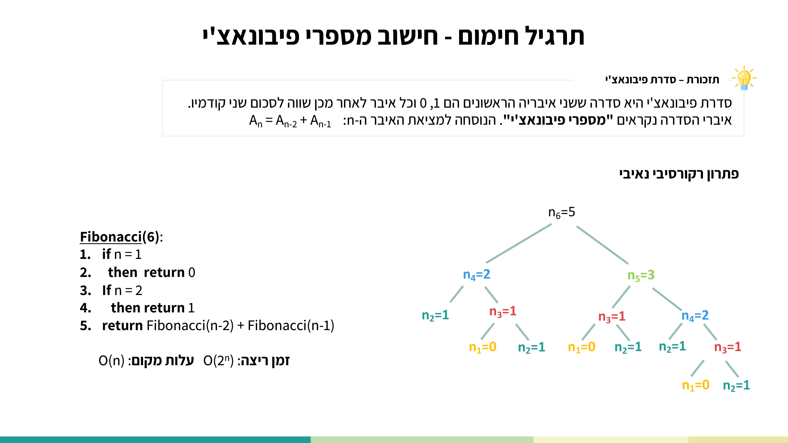
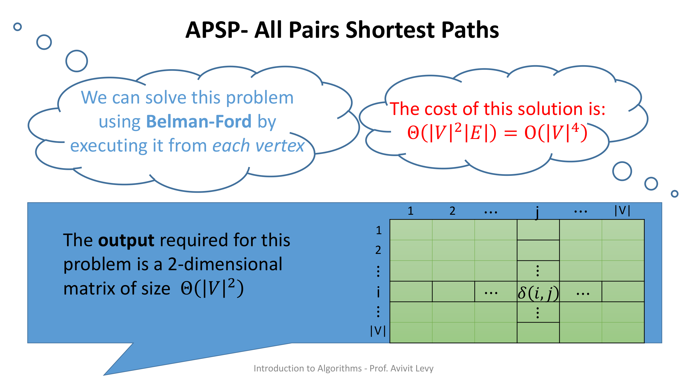
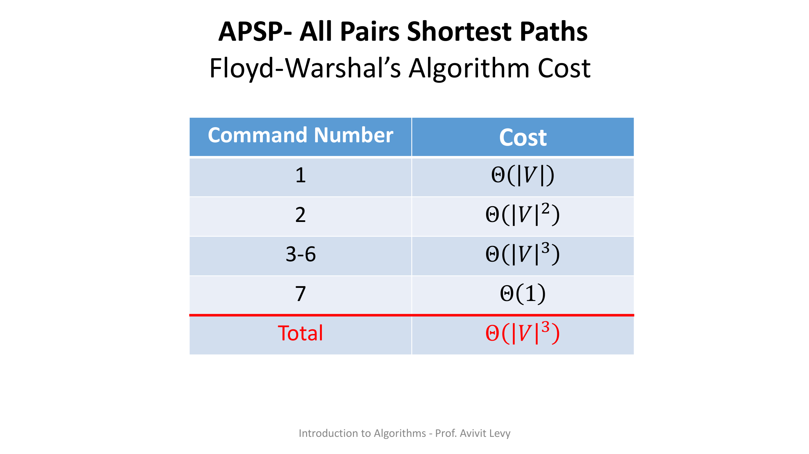
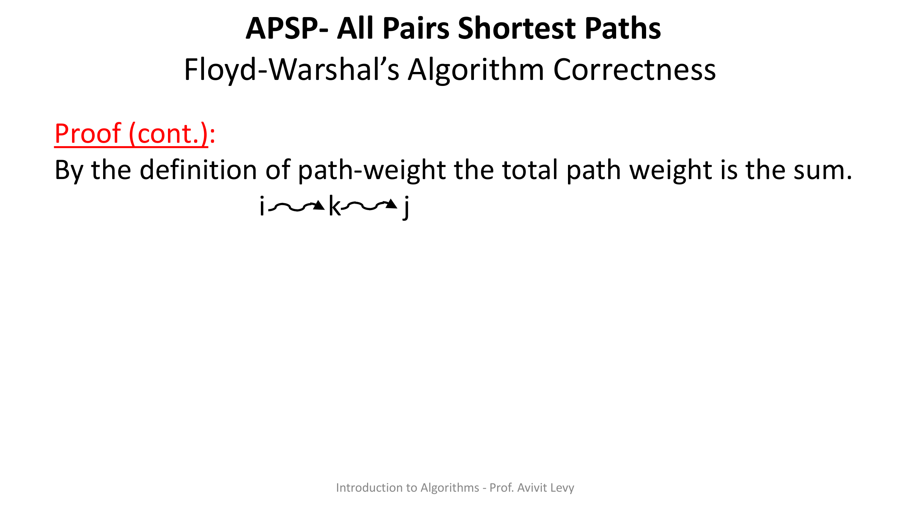
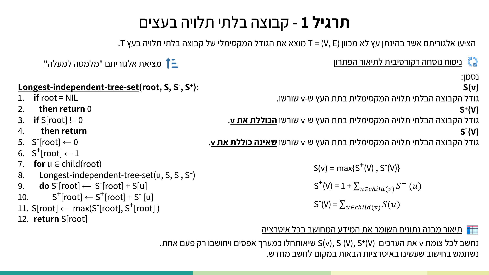
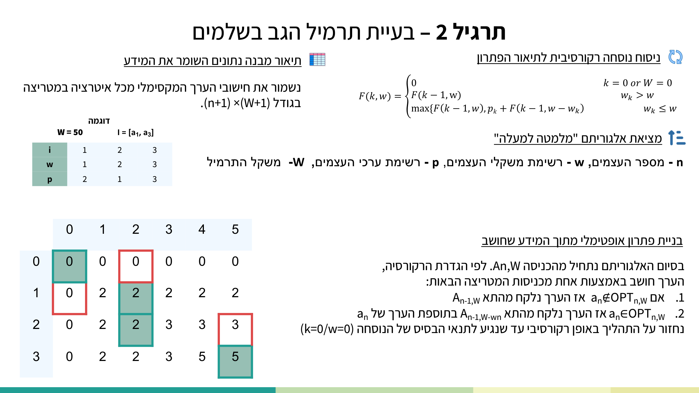

עד עכשיו פתרנו את בעיית המסלולים הקצרים ממקור יחיד —
SSSP — עם
Dijkstra ו-Bellman-Ford.
השאלה החדשה גדולה יותר: מה משקל המסלול הקצר ביותר בין כל זוג קודקודים בגרף?
זו בעיית APSP — All Pairs Shortest Paths: בהינתן
גרף ממושקל מכווןG = (V, E) עם פונקציית משקלw: E → ℝ, למצוא את δ(i,j)
לכל i, j ∈ V.
הכלי שנשתמש בו הוא תכנון דינמי (Dynamic Programming),
ומתוכו נגזר האלגוריתם המרכזי של היחידה — Floyd-Warshall.
לכן נלמד את הדף בשלושה גלים: קודם עקרונות התכנון הדינמי (מה זה, איך בונים אלגוריתם
כזה, ותרגיל חימום פיבונאצ'י), אחר כך בעיית APSP והפתרון הנאיבי, ולבסוף
Floyd-Warshall על כל חלקיו: נוסחת הנסיגה, הפסאודו-קוד, דוגמת הרצה, סיבוכיות והוכחת נכונות.
לפי המרצה: תכנון דינמי היא שיטה המתאימה לבעיות אופטימיזציה אותן ניתן לבטא באמצעות בעיות
קטנות יותר מאותו הסוג.המטרה — לא לחשב פעמיים את אותה בעיה קטנה, אלא לשמור
את תוצאות החישוב לשימוש נוסף בהמשך. זהו בדיוק המאפיין של תתי-בעיות חופפות (overlapping
subproblems): אותה תת-בעיה מופיעה שוב ושוב, ובמקום לפתור אותה מחדש — שומרים את תוצאתה בטבלה.
מקור: lec-dynamic-programming.pdf עמ' 2 — הגדרת תכנון דינמי ושלושת שלבי דרך הפעולה (ניסוח נוסחה רקורסיבית → תיאור מבנה נתונים → אלגוריתם איטרטיבי "מלמטה למעלה").
לפי המרצה, דרך הפעולה של כל אלגוריתם תכנון דינמי בנויה משלושה שלבים קבועים:
🔄 ניסוח נוסחה רקורסיבית לתיאור הפתרון (כולל תנאי עצירה).
📊 תיאור מבנה נתונים השומר את המידע המחושב בכל איטרציה.
⬆️ מציאת אלגוריתם איטרטיבי "מלמטה למעלה" המשתמש במבנה הנתונים לבניית הפתרון.
בקובץ ה-apsp המרצה מנסחת את אותם שלבים בגרסה מפורטת יותר, בת ארבעה חלקים —
זו התבנית הפורמלית של CLRS:
Recursive formalization of optimal value — ניסוח רקורסיבי של הערך האופטימלי.
Bottom-up computation of optimal value (using a table) — חישוב "מלמטה למעלה" בעזרת טבלה.
Optimal solution construction using the computed data — בניית הפתרון האופטימלי מהנתונים שחושבו.
1.1 במה תכנון דינמי שונה מ"הפרד ומשול" וממה שחמדני?
מקור: lec-dynamic-programming.pdf עמ' 3 — טבלת ההבדלים בין תכנון דינמי, הפרד-ומשול, וגישה חמדנית.
הפרד ומשול (divide & conquer): תתי-הבעיות שפותרת הרקורסיה הן זרות.
בתכנון דינמי, לרוב תתי-הבעיות חופפות, ולכן שומרים את המידע החופף במבנה נתונים לשימוש עתידי.
הגישה החמדנית (greedy): בשתי הגישות משתמשים בתכונת ה-תת-מבנה האופטימלי.
ההבדל: בגישה החמדנית לא משתמשים במידע שחושב באיטרציות קודמות, ובתכנון דינמי — כן.
1.2 תרגיל חימום — מספרי פיבונאצ'י
סדרת פיבונאצ'י מוגדרת Aₙ = Aₙ₋₂ + Aₙ₋₁. שימו לב לנוטציה של הקורס:
האינדקס מתחיל מ-1, כלומר A₁ = 0, A₂ = 1. הפתרון הרקורסיבי
ה"נאיבי" (כתוב Fibonacci — כך במקור) הוא:
Fibonacci(n):
1. if n = 1
2. then return 0
3. If n = 2
4. then return 1
5. return Fibonacci(n-2) + Fibonacci(n-1)
הבעיה: אותה תת-בעיה מחושבת פעמים רבות. עץ הרקורסיה של Fibonacci(6) ממחיש
זאת — הצמתים צבועים לפי ערכם כדי להראות כמה פעמים כל תת-בעיה חוזרת:

מקור: lec-dynamic-programming.pdf עמ' 7 — עץ הרקורסיה הצבעוני של Fibonacci(6). אותם ערכים (למשל n₃, n₂) חוזרים בענפים שונים — אלו התתי-בעיות החופפות. זמן ריצה O(2ⁿ), מקום O(n).
הפתרון בתכנון דינמי שומר רק את שני האיברים האחרונים (n1, n2) ומחשב איטרטיבית
"מלמטה למעלה":
Fibonacci(n):
1. if n = 1
2. then return 0
3. if n = 2
4. then return 1
5. n1 ← 0
6. n2 ← 1
7. for i ← 3 to n
8. do temp ← n1 + n2
9. n1 ← n2
10. n2 ← temp
11. return n2
התוצאה דרמטית: זמן ריצה O(n) ומקום O(1),
לעומת O(2ⁿ) זמן ו-O(n) מקום בפתרון הנאיבי. המרצה אף מדגימה
זאת ב-JavaScript על האיבר ה-43:
מה לראות: מבוא ויזואלי ואנימטיבי לתכנון דינמי — מספיק לצפות בחלק הפותח כדי להבין ממואיזציה מול טבלאות (top-down מול bottom-up) לפני שצוללים ל-Floyd-Warshall.
איך אפשר לפתור APSP עם הכלים שכבר יש לנו? פשוט מריצים
Bellman-Fordמכל קודקוד בנפרד
(from each vertex). Bellman-Ford פותר SSSP ממקור אחד בזמן Θ(|V|·|E|), ואם
נריץ אותו |V| פעמים (פעם לכל מקור אפשרי) נקבל את כל הזוגות. עלות הפתרון הנאיבי:
Θ(|V|²·|E|) = O(|V|⁴)
(השוויון האחרון נובע מכך שבגרף צפוף |E| = O(|V|²).) בחרנו ב-Bellman-Ford ולא
ב-Dijkstra כי הבעיה הכללית מתירה משקלים שליליים.
מבנה הפלט (output):APSP מחזיר
מטריצה דו-ממדית בגודל Θ(|V|²). השורות והעמודות ממוספרות
1, 2, …, |V|, ובתא שבשורה i עמודה j
נשמר δ(i,j) — משקל המסלול הקצר ביותר
מ-i ל-j.

מקור: apsp-dynamic-programming.pdf עמ' 1 — מטריצת הפלט של APSP: תא (i,j) מחזיק את δ(i,j), המטריצה בגודל |V|×|V|, ועלות הפתרון הנאיבי O(|V|⁴) (במקור: "Belman-Ford" — שגיאת כתיב של המרצה).
מקור: apsp-dynamic-programming.pdf (עמ' 1)
3. Floyd-Warshall — נוסחת הנסיגה על k
3.1 משתנה המצב dki,j
הרעיון של Floyd-Warshall הוא להגביל בהדרגה אילו קודקודים מותר לעבור דרכם. נגדיר את משתנה המצב של
התכנון הדינמי:
זה הערך שנמצא בטבלה אחרי האיטרציה ה-k של לולאת ה-for
שבשורה 3 של האלגוריתם. שימו לב לרעיון המפתח: כאשר k = 0 אסור להשתמש בשום
קודקוד ביניים, ולכן d⁰i,j הוא פשוט משקל הקשת הישירה
i → j (או ∞ אם אין קשת, ו-0 על האלכסון). כאשר
k = |V| כל הקודקודים מותרים כביניים, ולכן
d|V|i,j = δ(i,j) — המרחק האמיתי.
3.2 נוסחת הנסיגה
עוברים מ-dk-1 ל-dk בשאלה אחת:
האם המסלול הקצר ביותר (שמותר לו קודקודי ביניים מ-{1,…,k}) משתמש בקודקוד
k או לא? שני המקרים נותנים את נוסחת הנסיגה:
⎧ w(i,j) k = 0
d^k_{i,j} = ⎨
⎩ min( d^{k-1}_{i,j} , d^{k-1}_{i,k} + d^{k-1}_{k,j} ) k ≥ 1
המקרה שלא משתמש ב-k: המסלול נשאר כמו קודם, עם ביניים
מ-{1,…,k-1} — כלומר dk-1i,j.
המקרה שכן משתמש ב-k: המסלול מתפצל ל-i ⤳ k ⤳ j,
וכל חצי משתמש בביניים מ-{1,…,k-1} — כלומר
dk-1i,k + dk-1k,j.
לוקחים את המינימום מבין השניים. זו כל התובנה של האלגוריתם.
3.3 הפסאודו-קוד
Floyd-Warshall(W): // W = matrix of edge weights, w(i,j)
1. n ← rows[W] // Θ(|V|)
2. D⁰ ← W // d⁰_{i,j} = w(i,j) // Θ(|V|²)
3. for k ← 1 to n // lines 3–6: Θ(|V|³)
4. for i ← 1 to n
5. for j ← 1 to n
6. d^k_{i,j} ← min( d^{k-1}_{i,j} , d^{k-1}_{i,k} + d^{k-1}_{k,j} )
7. return D^n // Θ(1)
הסבר שורה-אחר-שורה:
שורה 1:n = מספר הקודקודים (מספר השורות במטריצת המשקלים).
שורה 2: אתחול הטבלה ההתחלתית D⁰ למטריצת המשקלים — כלומר
d⁰i,j = w(i,j) (משקל הקשת הישירה; ∞ אם אין קשת).
זהו בסיס האינדוקציה — מסלולים ללא שום קודקוד ביניים.
שורה 3: הלולאה החיצונית עוברת על k = 1..n — זהו "הגל" שמתיר
בהדרגה לכל קודקוד לשמש כביניים. הסדר הזה קריטי:k חייב להיות
הלולאה החיצונית ביותר.
שורות 4–5: לכל זוג (i, j) אפשרי בטבלה.
שורה 6: ההשמה עצמה — עדכון התא לערך הטוב מבין שני המקרים (עם/בלי
k). כאן "מחליטים" אם המעבר דרך k משפר את המסלול.
שורה 7: מחזירים את הטבלה הסופית Dn, שבה
Dn[i,j] = δ(i,j).
מטריצת D(k) חיה: הריצו את הלולאה על k וראו כיצד
השורה והעמודה של הקודקוד המתווך k נצבעות, ואילו תאים משתפרים כשמתירים מעבר
דרך k. בכל צעד מוצג המצב של הטבלה — זו הפדגוגיה של האלגוריתם.
מה לראות: הסבר קלאסי ומדויק ברמת קורס אקדמי, עם מילוי מטריצת המרחקים צעד-אחר-צעד לכל קודקוד ביניים k — בסיס מצוין להבנת Floyd-Warshall.
מה לראות: מסגור התכנון הדינמי של Floyd-Warshall — נוסחת הנסיגה, המעבר בין מטריצות והתמודדות עם מסלולים שליליים, עם אנימציות נקיות של הגרף.
מקור: apsp-dynamic-programming.pdf (עמ' 3–4), נוסחת הנסיגה משוחזרת לפי הפניות הפסאודו-קוד
4. דוגמת הרצה — מעקב אחר הטבלה
דוגמה שלנו: גרף מכוון עם 3 קודקודים והקשתות:
1→2 = 3, 2→3 = 4, 1→3 = 11
(קשת ישירה "יקרה"). על האלכסון 0, ובמקום שאין קשת ∞. הטבלה ההתחלתית:
D⁰ — ללא קודקודי ביניים (k = 0)
1
2
3
1
0
3
11
2
∞
0
4
3
∞
∞
0
k = 1 (מתירים מעבר דרך קודקוד 1): אף מסלול לא משתפר דרך 1 —
אין קשתות נכנסות אל 1 שיוצרות קיצור. D¹ = D⁰.
k = 2 (מתירים מעבר דרך קודקוד 2): נבדוק את
d(1,3):
k = 3: קודקוד 3 הוא "בור" (אין ממנו קשתות יוצאות), ולכן אינו
משמש כביניים לשום קיצור. D³ = D². זהו הפלט הסופי:
δ(1,3) = 7 — המסלול 1 → 2 → 3 זול מהקשת הישירה
1 → 3. בדיוק את הקיצור הזה "גילה" האלגוריתם בשלב k = 2.
המרצה מנתחת את העלות לפי מספר הפקודה (Command Number) בפסאודו-קוד. שלוש הלולאות המקוננות על
k, i, j (שורות 3–6) הן צוואר הבקבוק:
מספר פקודה
עלות
1
Θ(|V|)
2
Θ(|V|²)
3–6
Θ(|V|³)
7
Θ(1)
סה"כ
Θ(|V|³)

מקור: apsp-dynamic-programming.pdf עמ' 3 — טבלת עלות Floyd-Warshall לפי מספר הפקודה, שמסתכמת ב-Θ(|V|³).
מקור: apsp-dynamic-programming.pdf (עמ' 3)
6. הוכחת נכונות — אינדוקציה על k
הטענה (Claim): יהי G = (V, E) גרף ממושקל מכוון עם
w: E → ℝ. אחרי האיטרציה ה-k של לולאת ה-for
בשורה 3, מתקיים לכל i, j ∈ V: הערך
dki,j הוא משקל המסלול הקצר ביותר מ-i
ל-j שרשאי להשתמש בקודקודי ביניים מהקבוצה {1, …, k}.
ההוכחה היא באינדוקציה על k.
בסיס — k = 0
כאשר k = 0, k קטן מהערך החוקי הנמוך ביותר של קודקוד, ולכן
אסור להשתמש בשום קודקוד ביניים לפני האיטרציה הראשונה. אכן, שורה 2 מאתחלת את
d⁰i,j להיות משקל הקשת הישירה מ-i
ל-j (אם קיימת), לכל i, j ∈ V. לכן
d⁰i,j הוא אכן משקל המסלול הישיר הקצר ביותר.
צעד האינדוקציה
הנחת האינדוקציה: אחרי האיטרציה ה-(k-1), לכל
i, j ∈ V, הערך dk-1i,j הוא משקל
המסלול הקצר ביותר עם ביניים מ-{1, …, k-1}. נוכיח את הטענה עבור
k. למסלול קצר ביותר מ-i ל-j שרשאי
להשתמש בביניים מ-{1, …, k} יש שתי אפשרויות:
הוא אינו משתמש בקודקוד k, או
הוא כן משתמש בקודקוד k.
מקרה 1 (לא משתמש ב-k): אז המסלול הוא למעשה מסלול קצר ביותר
המשתמש בביניים מ-{1, …, k-1} בלבד, ולכן לפי הנחת האינדוקציה ערכו הוא
dk-1i,j.
מקרה 2 (משתמש ב-k): המסלול הקצר כזה מתפצל לשני חלקים:
i ⤳ k ⤳ j. לפי תכונת ה-אופטימליות של תתי-מסלולים
(sub-paths optimality of shortest paths), כל חצי הוא בעצמו מסלול קצר ביותר. לפי הנחת האינדוקציה,
dk-1i,k מחזיק את משקל המסלול הקצר ביותר מ-i
ל-k עם ביניים מ-{1, …, k-1}, ובאופן דומה
dk-1k,j עבור k ל-j.

מקור: apsp-dynamic-programming.pdf עמ' 12 — פירוק המסלול i ⤳ k ⤳ j במקרה 2 של ההוכחה: הקודקוד k מחלק את המסלול לשני תתי-מסלולים אופטימליים, שאורכם כבר חושב באיטרציה (k-1).
סכימה: לפי הגדרת משקל מסלול, משקל המסלול הכולל הוא הסכום
dk-1i,k + dk-1k,j. מכיוון שהחישוב
בשורה 6 מציב ל-dki,j את המשקל הטוב מבין
שני המקרים (ה-min), נובע שאחרי האיטרציה ה-k, לכל
i, j ∈ V, הערך dki,j הוא משקל
המסלול הקצר ביותר עם ביניים מ-{1, …, k}. מ.ש.ל
מסקנה
יהי G = (V, E) גרף ממושקל מכוון עם w: E → ℝ. כאשר אלגוריתם
Floyd-Warshall עוצר, מתקיים לכל i, j ∈ V:
Dn[i,j] = δ(i,j).
הוכחת המסקנה: קחו k = n בטענה האחרונה — אז מותרים כל
הקודקודים כביניים, כלומר קיבלנו את המרחק האמיתי. המסקנה נובעת (why?).
מקור: apsp-dynamic-programming.pdf (עמ' 4–14)
7. שחזור פתרונות — השלב הרביעי של תכנון דינמי
עד כה חישבנו את ערך הפתרון האופטימלי (משקל המסלול, גודל הקבוצה, הרווח המקסימלי). השלב
הרביעי בתבנית ה-DP הוא בניית הפתרון עצמו מהנתונים שחושבו. המרצה מדגימה זאת בשני
התרגילים הגדולים של השיעור — קבוצה בלתי תלויה בעצים ותרמיל הגב — שם ה-backtracking
על הטבלה משחזר את הבחירות.
7.1 קבוצה בלתי תלויה מקסימלית בעץ
בהינתן עץ לא מכווןT = (V, E), מוצאים את הגודל המקסימלי של קבוצה בלתי תלויה
(קבוצת צמתים U שבה אין שני שכנים). האבחנה: אם צומת
v נלקח לקבוצה, אסור לקחת את בניו או אביו. לכן מגדירים לכל צומת שלושה ערכים:
S(v) — הקבוצה הבלתי תלויה המקסימלית בתת-העץ ששורשו v.
מקור: lec-dynamic-programming.pdf עמ' 16 — עץ שבו הקבוצה הבלתי תלויה המקסימלית מסומנת בטורקיז: לעולם לא נבחרים שני שכנים (אב-בן).

מקור: lec-dynamic-programming.pdf עמ' 19 — הנוסחאות S(v), S⁺(v), S⁻(v) והפסאודו-קוד של Longest-independent-tree-set. זמן ריצה O(V+E).
Longest-independent-tree-set(root, S, S⁻, S⁺):
1. if root = NIL
2. then return 0
3. if S[root] != 0
4. then return
5. S⁻[root] ← 0
6. S⁺[root] ← 1
7. for u ∈ child(root)
8. Longest-independent-tree-set(u, S, S⁻, S⁺)
9. do S⁻[root] ← S⁻[root] + S[u]
10. S⁺[root] ← S⁺[root] + S⁻[u]
11. S[root] ← max(S⁻[root], S⁺[root])
12. return S[root]
7.2 תרמיל הגב (0/1 Knapsack) — ה-trace שמדגים בנייה מהטבלה
זו הדוגמה המספרית המלאה היחידה בקובץ. נתון תרמיל בקיבולת
W, ולכל עצם aᵢ משקל
wᵢ ורווח pᵢ. הנוסחה הרקורסיבית (0/1 — כל פריט לכל היותר פעם):
⎧ 0 k = 0 or W = 0
F(k, w) = ⎨ F(k-1, w) wₖ > w
⎩ max{ F(k-1, w) , pₖ + F(k-1, w-wₖ) } wₖ ≤ w
דוגמת trace (n=3, w=[1,2,3],
p=[2,1,3], קיבולת 0..5). שורות = מספר עצמים k, עמודות =
קיבולת w:
k \ w
0
1
2
3
4
5
0
0
0
0
0
0
0
1
0
2
2
2
2
2
2
0
2
2
3
3
3
3
0
2
2
3
5
5
הפתרון האופטימלי הוא A₃,₅ = 5. שחזור (backtracking): מתחילים
מהתא A_{n,W} ובכל צעד שואלים אם הערך הגיע מ-A_{k-1,w}
(הפריט aₖ לא נלקח) או מ-A_{k-1, w-wₖ} + pₖ (נלקח),
עד תנאי הבסיס — וכך משחזרים אילו פריטים נבחרו.

מקור: lec-dynamic-programming.pdf עמ' 32 — מטריצת ה-Knapsack המלאה עם הדגשת ה-backtracking הצבעונית: המסלול לאחור בטבלה מגלה אילו פריטים נכנסו לפתרון האופטימלי.
להלן שלוש שאלות התרגיל (מילה במילה) עם הפתרון הרשמי וההסבר המודרך. זכרו — המבחן כולל שאלה
מתרגילי הבית. הנחיות המבנה לתשובה (מתוך גוף התרגיל): נוסחה רקורסיבית ותנאי עצירה, הסבר רעיוני
ומשמעות כל אינדקס, הוכחת נכונות בקצרה, תיאור מבנה הנתונים וגודלו, מה מכילה יחידה בודדת, אופן המילוי, ועלות בזמן.
דף התרגיל הרשמי כפי שנכתב — hw-dynamic-programming.pdf עמ' 1
שאלה 1 — אלגוריתם פלוייד וורשל וזיהוי מעגל שלילי
1) אלגוריתם פלוייד וורשל:
ניתן להרחיב את אלגוריתם פלוייד וורשל, כך שידווח על מעגלים שליליים (ללא שינוי בזמן הריצה אסימפטוטית).
ניתן לעשות זאת ע"י התבוננות בפלט של פלוייד וורשל, כמו שנראה בשאלה זו. נתון גרף G = (V,E)
מכוון עם פונקציית משקל w:E→R עליו הורץ אלגוריתם פלוייד וורשל, והתקבלה מטריצה
D|V| = {di,j|V|}.
הוכיחו: יש מעגל בעל משקל שלילי בגרף אם ורק אם קיים i עבורו di,i|V| < 0.
הפתרון הרשמי כפי שנכתב — sol-hw-dynamic-programming.pdf עמ' 1
אינטואיציה: המרחק הקצר ביותר מקדקוד לעצמו מוגדר להיות 0. אם קיים קדקוד שמרחקו
מעצמו שלילי - קיים מעגל בגרף שמשקלו שלילי (שמשפר את משקלו הראשוני).
פתרון:
צ"ל: יש מעגל בעל משקל שלילי בגרף אם ורק אם קיים i עבורו di,i|V| < 0
כיוון 1:
נתון: קיים i עבורו di,i|V| < 0
צ"ל: יש מעגל בעל משקל שלילי בגרף
הוכחה: אם קיים i עבורו di,i|V| < 0 אז קיים מסלול מקדקוד i לעצמו שמשקלו שלילי, כלומר, מעגל שלילי.
כיוון 2:
נתון: יש מעגל בעל משקל שלילי בגרף
צ"ל: קיים i עבורו di,i|V| < 0
הוכחה: נניח שיש מעגל בעל משקל שלילי בגרף. יהי r האינדקס
הגדול ביותר של קודקוד ביניים על המעגל. יהי i צומת על המעגל. המעגל מהווה מסלול
מקדקוד i לעצמו, ומשקלו שלילי, כמו כן, מסלול זה מתגלה על-ידי האלגוריתם
ומשקלו מחושב באיטרציה של הלולאה בשורה 3 שבה K=r מכיוון ש-r
הוא קדקוד הביניים החדש באיטרציה זו, והאלגוריתם מנסה מסלולים מכל קודקוד מוצא (כולל הקדקוד
i) לכל קודקוד יעד (כולל הקדקוד i) כאשר קודקודי
הביניים המותרים הם בקבוצה {1…r}. מאחר ו-k≤|V|,
מתקיים di,i|r| ≤ di,i|V| < 0,
כי בכל איטרציה המשקל יעודכן רק אם הוא קטן יותר. מ.ש.ל
הסבר מודרך:
הכיוון הקל (1):di,i הוא משקל מסלול מ-i ל-i — כלומר מעגל. אם הוא שלילי, מצאנו מעגל שלילי.
הכיוון המהותי (2): אם קיים מעגל שלילי, נסתכל על r = הקודקוד בעל האינדקס הגבוה ביותר על המעגל. באיטרציה k=r כל שאר קודקודי המעגל כבר הותרו כביניים, ולכן האלגוריתם "רואה" את המעגל השלם כמסלול מ-i לעצמו.
המונוטוניות: מכיוון שהטבלה רק יורדת (עדכון רק כשקטן יותר), הערך בסוף di,i|V| קטן-שווה לערך באיטרציה r, ולכן נשאר שלילי.
למה זה יפה: אין צורך באלגוריתם נפרד — עצם קריאת האלכסון של מטריצת הפלט מזהה מעגל שלילי, ללא תוספת לזמן הריצה.
2) בהינתן סדרת מספרים A₁,…,Aₙ, הציעו אלגוריתם תכנון דינמי
בסיבוכיות זמן O(n), שמוצא את הסכום המקסימלי שניתן לקבל מהסדרה בלי לקחת שני
איברים רצופים.
דוגמא – 3 6 2 3 5 7 6 . תשובה – 17. (בדוגמה: 6+5+6 = 17. הקו התחתון מסמן את האיברים שנבחרו.)
הפתרון הרשמי כפי שנכתב — sol-hw-dynamic-programming.pdf עמ' 2
1. הנוסחה הרקורסיבית ותנאי העצירה:
S₁ = A₁
S_{k+1} = max { Sₖ , S_{k-1} + A_{k+1} }
2. הסבר רעיוני של הנוסחה
נסמן ב-Sₖ את הסכום המקסימלי שניתן לקבל מהסדרה A₁, A₂, …, Aₖ בלי לקחת שני איברים רצופים.
3. הוכחת נכונות הנוסחה
נוכיח באינדוקציה על k.
נסמן ב-OPTₖ את הקבוצה האופטימלית מתוך האיברים A₁, A₂, …, Aₖ שאינה מכילה זוג איברים רצופים. (סכומה Sₖ כי היא אופטימלית)
בסיס: עבור k = 1 מתקיים S₁ = A₁
צעד: נניח נכונות עבור k'≤k ונוכיח עבור k+1:
ייתכנו שני המצבים הבאים:
1. S_{k+1} = Sₖ ⇐ A_{k+1} ∉ OPT_{k+1}
2. S_{k+1} = S_{k-1} + A_{k+1} ⇐ A_{k+1} ∈ OPT_{k+1} ⇐ Aₖ ∉ OPT_{k+1} (כי אסור להכניס שני איברים רצופים)
S_{k-1} ו-Sₖ מקסימליים לפי הנחת האינדוקציה. לכן, בחירת המקסימום מבין שני המצבים האפשריים תתן את הסכום המקסימלי.
6-4. תיאור מבנה הנתונים, גודל המבנה, יחידה בודדת במבנה
מערך S בגודל n+1 שיכיל את הסכומים המקסימליים Sₖ לכל 0 ≤ k ≤ n. נאתחל S[0] = 0, S[1] = A₁
7. האלגוריתם
find_max_sum(A)
1. S ← array[n+1]
2. S[0] ← 0
3. S[1] ← A[1]
4. for i ← 2 to n
5. do S[i] = max(S[i-1], S[i-2] + A[i])
6. return S[n]
8. עלות
זמן:Θ(n)
מקום:Θ(n) - כגודל מערך העזר.
הסבר מודרך:
תבנית ה-max הקבועה של הקורס: כמו בכל התרגילים, ההחלטה היא "לקחת" מול "לא לקחת" את האיבר הנוכחי. "לא לוקחים" → Sₖ (הסכום עד האיבר הקודם). "לוקחים" → A_{k+1} + S_{k-1} — מוסיפים את האיבר, אבל מדלגים על שכנו הישיר Aₖ, ולכן חוזרים ל-S_{k-1}.
בדיקה על הדוגמה: על 3 6 2 3 5 7 6 מקבלים בסוף 17 (הבחירה 6, 5, 6). שימו לב שאסור 7 יחד עם 6 האחרון — הם רצופים.
מבנה הנתונים: מערך חד-ממדי; כל תא תלוי רק בשני קודמיו — אפשר אף לצמצם ל-O(1) מקום (כמו בפיבונאצ'י).
שאלה 3 — וריאציה של תרמיל הגב (Unbounded Knapsack)
3) בוריאציה של בעיית תרמיל הגב, נתונה רשימה של עצמים (עם משקלים ורווחים) שאפשר
להסתכל עליה כ"תפריט" - כלומר, מכל פריט ישנה כמות בלתי מוגבלת. הציעו אלגוריתם תכנון דינמי בסיבוכיות
זמן O(nW) (כאשר n - מספר הפריטים, W
- מגבלת המשקל של התרמיל) הפותר את הבעיה.
הפתרון הרשמי כפי שנכתב — sol-hw-dynamic-programming.pdf עמ' 3
1. הנוסחה הרקורסיבית ותנאי העצירה:
pₖ - ערך העצם ה-k | wₖ - משקל העצם ה-k | n - מספר העצמים | w - משקל התרמיל
⎧ 0 k = 0 or w = 0
F(k, w) = ⎨ F(k-1, w) wₖ > w
⎩ max{ F(k-1, w) , F(k, w-wₖ) + pₖ } wₖ ≤ w
(שימו לב: בשונה מ-0/1 knapsack שבשיעור — כאן במקרה wₖ ≤ w משתמשים ב-F(k, w-wₖ) (אותה שורה k) ולא ב-F(k-1, …), כי מותר לקחת את אותו פריט שוב ושוב.)
2. הסבר רעיוני של הנוסחה
נסמן ב-F(k,w) את הרווח המקסימלי כאשר בוחרים עצמים מתוך הקבוצה A₁, A₂, …, Aₖ ואת גודל התרמיל W. תחת סימון זה, נרצה לחשב את F(n,W). אם לא ניתן להכניס את האיבר ה-k לתרמיל (wₖ > w) אז הרווח האופטימלי הוא F(k-1, w). אם ניתן להכניס את האיבר ה-k לתרמיל (wₖ ≤ w) אז הרווח האופטימלי יהיה המקסימום בין לבחור להכניס את האיבר לתרמיל לבין לא להכניס את האיבר לתרמיל.
3. רעיון הוכחת הנכונות של הנוסחה בקצרה
עבור תת הבעיה הקטנה ביותר - כאשר אין עצמים - אז הרווח יהיה 0. כאשר יהיו עצמים אפשריים לבחירה – הרווח יהיה תלוי באם הם ייכנסו לתיק או לא- אם כן – נחזור על תת הבעיה עבור תיק קטן יותר, אם לא, נפתור את הבעיה עבור מספר קטן יותר של עצמים.
נסמן ב-OPTₖ פתרון אופטימלי (קבוצת העצמים, לא רק הרווח), שרווחו מההגדרה F(k,w)
בסיס: עבור k=0 , F(0,w) = 0 שזהו הרווח האופטימלי במקרה זה
צעד: נניח נכונות על k-1 ולכל w'≤w וכן נניח נכונות ל-k ולכל w'<w ונוכיח נכונות לזוג הערכים k,w
אם w >wₖ - הרווח לפי הנוסחה יהיה F(k-1, w) ולפי ההנחה הוא רווח אופטימלי
אם wₖ ≤ w ייתכנו שני המצבים הבאים:
אם wₖ∉OPTₖ - הרווח האפשרי יהיה F(k-1, w) (ללא בחירת האיבר ה-k) אשר לפי ההנחה הוא רווח אופטימלי
אם wₖ∈OPTₖ - הרווח האפשרי יהיה pₖ+F(k, w-wₖ), כלומר, אותה הבעיה רק עם תרמיל קטן יותר שלפי הנחת האינדוקציה, הוא רווח אופטימלי
לכן, בחירת המקסימום בין שני המקרים האלו תתן את הרווח המקסימלי.
6-4. תיאור מבנה הנתונים, גודל המבנה, יחידה בודדת במבנה
נשתמש במטריצה בגודל nW, כאשר n הם מספר העצמים ו-Wᵢ קיבולת משקל התרמיל. נאתחל A_{0,w}, A_{k,0} = 0
הפתרון הרשמי כפי שנכתב — sol-hw-dynamic-programming.pdf עמ' 4
7. האלגוריתם
n - אינדקס העצמים, Nw - רשימת משקלי העצמים, p - רשימת ערכי העצמים, W - משקל התרמיל
knapsack(n, Nw, p, W)
1. if n = 0 or W = 0
2. return 0
3. A ← (n + 1)(W + 1)
4. A₀,w ← 0
5. Aₖ,₀ ← 0
6. for k ← 1 to n
7. for w ← 1 to W
8. if Nw[k] <= w
9. then Aₖ,w ← max(p[k] + A_{k, w-Nw[k]}, A_{k-1,w})
10. else Aₖw ← A_{k-1,w}
11. return A_{N,W}
(שימו לב: בשורה 9 מופיע A_{k, w-Nw[k]} — אותה שורה k, המימוש של unbounded knapsack.)
8. עלות
מקום:O(nW) , זמן:O(nW)
הסבר מודרך:
ההבדל היחיד מ-0/1: ב-0/1 knapsack (שיעור), כשלוקחים את הפריט חוזרים ל-F(k-1, w-wₖ) — שורה קודמת, כי כל פריט לכל היותר פעם. ב-unbounded חוזרים ל-F(k, w-wₖ) — אותה שורה, כי מותר לקחת שוב את אותו פריט. זו נקודה שקל להתבלבל בה — שימו לב אליה במבחן!
הסיבוכיות O(nW) היא פסאודו-פולינומית: היא תלויה ב-ערךW ולא באורך הקלט (מספר הביטים לייצג את W). זו נקודה שהמרצה מדגישה במפורש.
אופן המילוי: ממלאים שורה-שורה מ-k=1 ל-n, ובכל שורה מקיבולת 0 עד W — כך שכל תא שהנוסחה מפנה אליו כבר חושב.